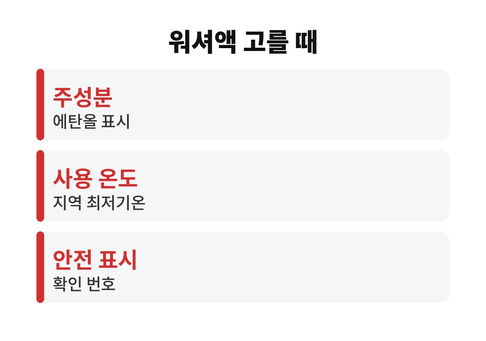
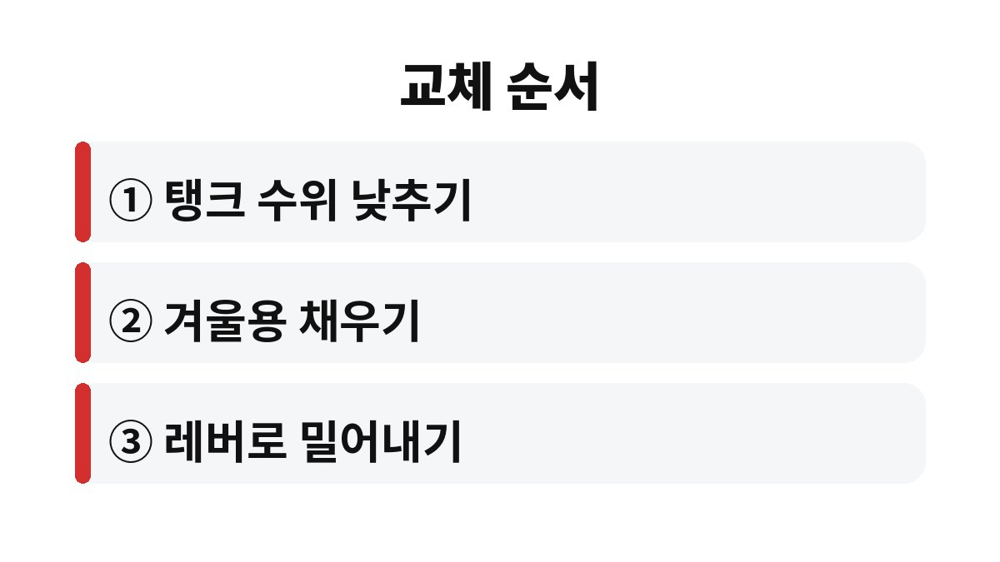

겨울 워셔액 교체는 영하로 내려가기 전에 탱크에 남은 여름용을 최대한 비우고 겨울용을 채우면 끝난다.
여름용 워셔액은 물에 가까워 영하에서 얼 수 있고, 얼면 노즐이 막히거나 펌프에 무리가 간다.
여름용 워셔액은 세정 성분 위주라 추위를 견디도록 만든 제품이 아니다.
밤사이 기온이 영하로 떨어지면 가는 호스와 노즐 안에서 먼저 언다.
아침에 워셔 레버를 당겨도 액이 나오지 않고, 그 상태로 계속 누르면 펌프 모터만 헛돈다.
고속도로에서 앞차가 튀긴 흙탕물이 앞유리를 덮었는데 워셔액이 나오지 않는 장면을 떠올리면 미리 바꿔야 하는 이유가 바로 보인다.
교체 시기를 정하는 기준은 달력보다 일기예보다.
아침 최저기온이 영하로 내려간다는 예보가 처음 나오기 전에 바꿔 두면 된다.
중부 내륙이나 산간 지역은 남부 해안보다 첫 영하가 훨씬 빨리 온다.
나는 11월 초 타이어 공기압을 볼 때 워셔액 탱크도 같이 열어 본다.
한 번에 두 가지를 챙기니 잊어버릴 일이 없다.
메탄올 워셔액은 인체 독성 문제로 2018년부터 판매가 금지됐다.
지금 매장에 있는 겨울용 제품은 대부분 에탄올을 쓴다.
다만 제품마다 에탄올 함량이 달라 견디는 온도도 다르다.
같은 매장에서도 사용 온도가 영하 10℃대인 제품과 영하 20℃대인 제품이 함께 놓여 있는 경우가 많다.
사는 곳이 따뜻한 남부라면 낮은 온도까지 견디는 제품을 굳이 고를 필요는 없다.
대신 스키장이나 산간 도로를 자주 오가는 차라면 그 지역 최저기온을 기준으로 고른다.
| 확인할 표시 | 볼 내용 | 판단 기준 |
|---|---|---|
| 주성분 | 에탄올 표시 여부 | 메탄올 표시 제품은 쓰지 않는다 |
| 사용 온도 | 병에 적힌 영하 온도 | 사는 지역 최저기온보다 낮은 것 |
| 원액·희석 | 원액인지 희석용인지 | 희석용은 적힌 비율대로만 섞는다 |
| 안전 확인 | 생활화학제품 안전기준 확인 표시 | 확인 번호가 적힌 제품 |

기존 액을 빼내는 도구는 없어도 된다.
교체 한두 주 전부터 워셔액을 평소보다 자주 써서 수위를 낮춰 두면 된다.
여름용과 겨울용이 반씩 섞이면 병에 적힌 온도보다 훨씬 높은 온도에서 언다는 점을 기억해 둔다.

탱크 수위 경고등이 있는 차는 겨울용을 채운 뒤 경고등이 꺼졌는지도 본다.
남은 겨울용 워셔액은 뚜껑을 꼭 닫아 트렁크 대신 서늘한 실내에 둔다.
에탄올이 들어 있어 불이 붙을 수 있으므로 난로나 보일러 근처는 피한다.
원액 겨울용에 물을 섞으면 어는 온도가 올라간다.
병에 적힌 영하 온도는 원액 기준이라 섞는 순간 그 숫자는 믿을 수 없다.
유리가 얼어 있을 때 분사하면 액이 얇게 다시 얼어붙을 수 있다.
히터로 앞유리를 먼저 데운 뒤 뿌리는 편이 낫다.
와이퍼 고무가 유리에 붙어 있으면 억지로 작동하지 말고 녹을 때까지 기다린다.
급하다고 뜨거운 물을 부으면 유리가 갑작스러운 온도 차를 받아 금이 갈 수 있다.
눈이 오는 밤 와이퍼를 유리에 붙인 채 세워 두면 고무가 유리에 얼어붙는다.
다음 날 아침 그대로 작동하면 고무 날이 찢어져 줄무늬가 남는다.
눈 예보가 있는 날은 와이퍼를 세워 두거나 앞유리 커버 아래에 넣어 두면 된다.
얼었던 고무는 겨울을 넘기면서 쉽게 굳으니, 닦을 때 줄이 생기기 시작하면 교체 시기로 본다.
워셔액 교체는 비용도 적고 몇 분이면 끝나는 일이다.
다만 날이 풀린 뒤에도 레버를 당겨 액이 나오지 않는다면 언 게 아니라 펌프나 퓨즈 문제일 수 있으니 정비소에서 확인하는 편이 빠르다.
참고 자료: 환경부 「메탄올 함유 워셔액 판매 금지 안내」(2026년 11월 확인)
※ 2026년 기준 공공기관 안내를 바탕으로 정리한 글이며, 차종과 연식에 따라 기준이 다를 수 있어 차량 설명서와 공식 안내를 함께 확인하길 바란다.